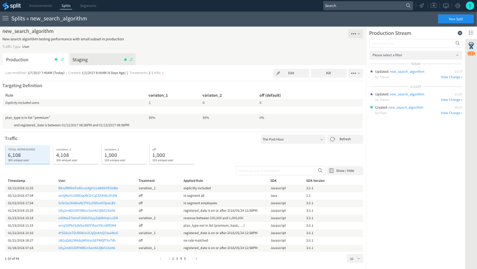

Your app
Split is the leading platform for controlled rollouts, helping businesses of all sizes deliver exceptional user experiences—and mitigate risk—by providing an easy, secure way to target features to customers. Companies like WePay, Segment and thredUP rely on Split to safely introduce and test new features, and draw insights on their use. Out of the box, Split provides:

In Datadog:
In Split:
Split data should now be flowing into Datadog.